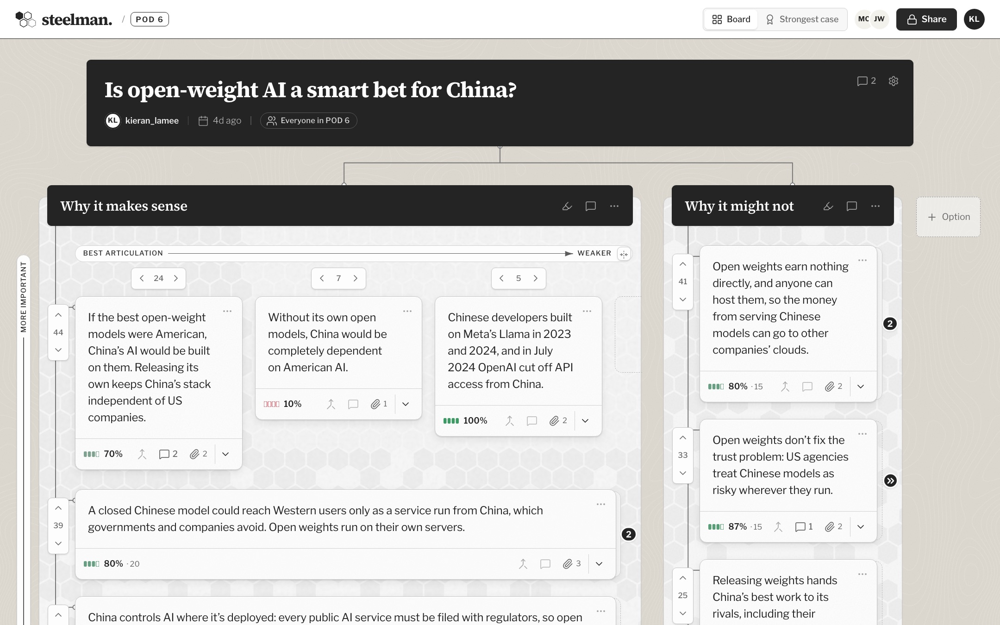

Students
Deciding on a class project, or running a class debate.
Kieran LaMee · POD 6 · Building with AI
Separate votes for importance, credibility, and wording bring the best version of every argument to the top, so no one argues against a strawman.
Try the prototype
Deciding on a class project, or running a class debate.
Making an important choice between a few clear options.
Working through an important debate together, in public.
Neither lets people judge an argument the three ways it needs: how important it is, how credible it is, and how well it’s put. Everything collapses into one reply or one upvote.
Each vote has a clear job, not a single up or down. The strongest, best-articulated, most credible arguments surface on each side.
View an alternative articulation of a key argument, to compare wordings and vote for the one that states it best.
Moderating argument strength or credibility beyond users’ own votes.
AI summaries or AI judgments of how strong an argument is.
Money or incentives beyond simple points, like Reddit karma.